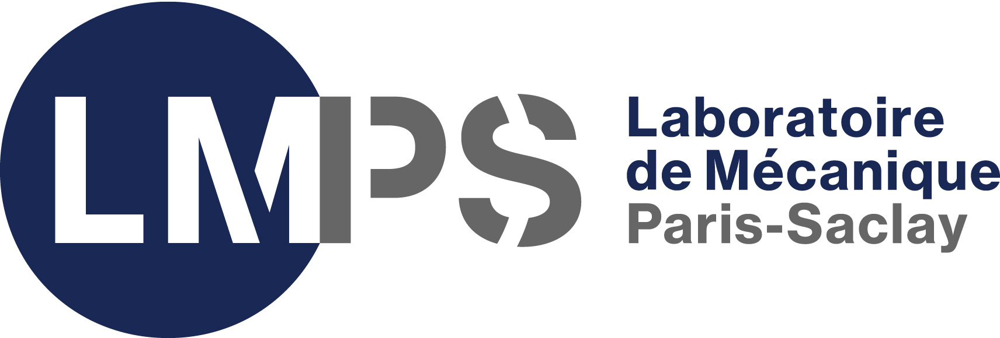
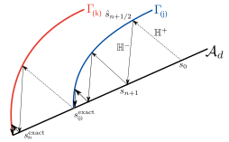

Audition pour le poste en tenure-track E4H - ENSTA
Institut Polytechnique de Paris
May 15, 2025
Parcours académique
CPGE - Lycée Hoche
MPSI-PSI*

Thèse au LMPS (LMT) - UMR 9026
- Vers une Méthode de Réduction de Modèles Optimisée pour le Traitement d’un Grand Nombre de Simulations en Dynamique Non-linéaire
- Sous la direction de D. Néron
- En partenariat avec le CEA de Saclay
2014 - 2016
2016 - 2020
2020 - 2023
ENS Paris-Saclay (Cachan)
- L3 Pluridisciplinaire
- M1 Mécanique des Matériaux et des Structures
- Coloration numérique
- M2E Formation à l’Enseignement Supérieur
- Agrégation
- M2R Modélisation et Simulation en Mécanique des Structures et Systèmes Couplés (MS2SC)

Expériences
Agrégation + M2 FeSup
- Séances de correction de TD - remédiation à l’IUT de Cachan (1h/semaine)
Co-rédaction d’un livre
- Oraux corrigés et commentés de physique-chimie PSI-PSI aux éditions Ellipses
- 100 exercices

2018 - 2019
2019
2019
2020 - 2023
Lycée Hoche - Colles de SI en PCSI (64h)
Monitorat au bachelor de l’École Polytechnique
- 192h sur trois ans en anglais
- Mécanique et thermodynamique
- Travaux dirigés, Travaux pratiques
- Rédaction de sujets de TD et d’un TP
- Corrections d’examens et de compte-rendus
Thèse - Grand nombre d’appels au solveur
Dynamique non-linéaire
- Prediction de la probabilité de défaillance d’éléments de tuyauterie sous chargement sismique
- pour chaque niveau de chargement un grand nombre de calculs doivent être réalisés
- Chaque calcul est couteux car fortement non-linéaire
- Edommagement ductile piloté par la plasticité
- Écrouissages cinématique et isotrope linéaires
PGD espace-temps \[\textcolor{VioletLMS}{\boldsymbol{u}}\left(\textcolor{BleuLMPS}{\boldsymbol{x}}, \textcolor{LGreenLMS}{t}\right) = \sum\limits_{i=1}^m \textcolor{BleuLMPS}{\overline{\boldsymbol{u}}_i(\boldsymbol{x})} ~\lambda_i(t)\]
Linéarisateur ad hoc LATIN-PGD
- Solveur itératif espace-temps
Stratégie optimale de chainage des calculs
- Tirer partie de la redondance entre les différents calculs pour dimuner le coût total de l’étude paramétrique




{kind=link}
{kind=link}